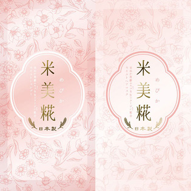

返回列表
产品名称：米美糀 モイスト1DAYトライアル

＿ 米美糀 モイスト1DAYトライアル １０ＭＬ＋１０Ｇ
メーカー ＿
JANコード 4589975540385
商品の特徴
米ぬか発酵エキス＆生コラーゲン配合
- 成分・分量
- 【シャンプー】
水、コカミドプロピルベタイン、オレフィン(C14-16)スルホン酸Na、コカミドDEA、グリセリン、乳酸桿菌/コメヌカ発酵液、コメ発酵液、コメ粉、コメ胚芽油、コメヌカ油、加水分解コメタンパク、コメヌカエキス、スフィンゴ糖脂質、水溶性コラーゲン、サトザクラ花エキス、ボタンエキス、マドンナリリー根エキス、シャクヤク根エキス、ツバキ油、アシタバ葉/茎エキス、センブリエキス、カワラヨモギ花エキス、ハトムギ種子エキス、リシンHCl、グルタミン酸、グリシン、ロイシン、ヒスチジンHCl、セリン、バリン、トレオニン、シスチン、アスパラギン酸Na、イソロイシン、アラニン、アルギニン、フェニルアラニン、プロリン、チロシン、サボンソウ葉エキス、サビンヅストリホリアツス果実エキス、オレンジ油、グルコノバクター/ハチミツ発酵液、カキタンニン、チャ葉エキス、豆乳発酵液、乳酸桿菌/セイヨウナシ果汁発酵液、乳酸桿菌/ブドウ果汁発酵液、アラントイン、DPG、PPG-7、ポリクオタニウム-10、安息香酸Na、EDTA-2Na、乳酸Na、オレイン酸ポリグリセリル-10、乳酸、タウリン、レシチン、イノシン酸2Na、グアニル酸2Na、アスコルビン酸、リンゴ酸、クエン酸、BG、エタノール、フェノキシエタノール、香料
【ヘアマスク】
水、パルミチン酸エチルヘキシル、水添ナタネ油アルコール、ミリスチルアルコール、グリセリン、ジメチコン、ステアルトリモニウムブロミド、乳酸桿菌/コメヌカ発酵液、コメ発酵液、コメ粉、コメ胚芽油、コメヌカ油、加水分解コメタンパク、コメヌカエキス、スフィンゴ糖脂質、水溶性コラーゲン、サトザクラ花エキス、ボタンエキス、マドンナリリー根エキス、シャクヤク根エキス、ツバキ油、アシタバ葉/茎エキス、センブリエキス、カワラヨモギ花エキス、ハトムギ種子エキス、リシンHCl、グルタミン酸、グリシン、ロイシン、ヒスチジンHCl、セリン、バリン、トレオニン、シスチン、アスパラギン酸Na、イソロイシン、アラニン、アルギニン、フェニルアラニン、プロリン、チロシン、セラミド2、セラミドAP、セラミドNP、コレステロール、クオタニウム-33、アルガニアスピノサ核油、月見草油、ザクロ種子油、ホホバ種子油、ゴマ油、アーモンド油、シア脂、イノシトール、ハチミツ、メドウフォーム-δ-ラクトン、トコフェロール、シクロヘキサン-1,4-ジカルボン酸ビスエトキシジグリコール、ゼイン、イノシン酸2Na、グアニル酸2Na、DPG、オレイン酸ポリグリセリル-10、タウリン、レシチン、リンゴ酸、アラントイン、アスコルビン酸、ジココジモニウムクロリド、クオタニウム-18、イソプロパノール、ヒドロキシエチルセルロース、クエン酸、PG、BG、エタノール、フェノキシエタノール、香料
- 用法及び用量
- 【シャンプー】
髪を十分ぬらした後、適量を髪全体に伸ばしよく泡立てて洗います。その後、十分すすいでください。めびか モイストコンディショナーと合わせてご使用いただくことをおすすめします。
内容量：10mL
【ヘアマスク】
シャンプーの後、軽く水気を取り、適量を手のひらにとって伸ばし、髪全体をなじませます。その後、十分にすすいでください。めびか シリーズでご使用いただくことをおすすめします。
内容量：10g